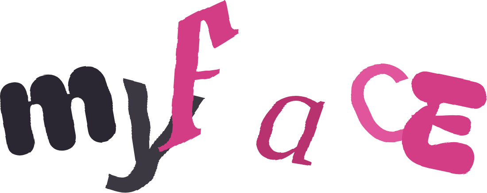
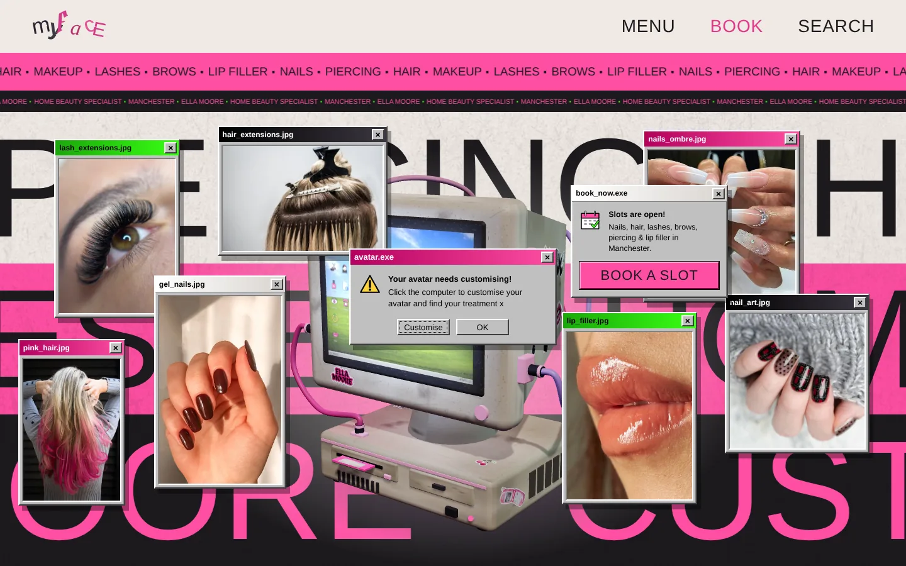
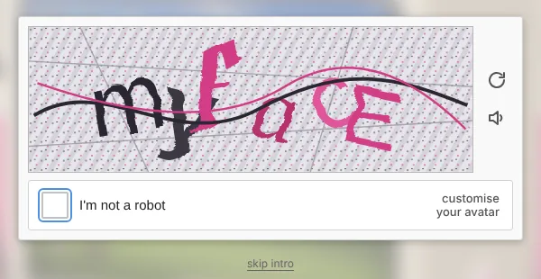
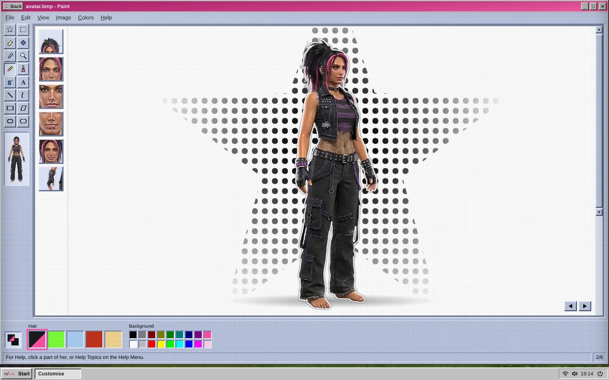
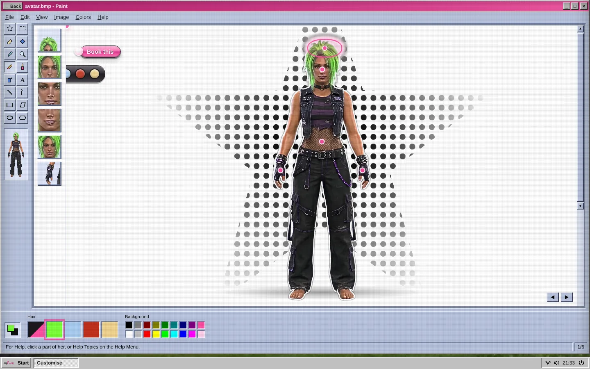
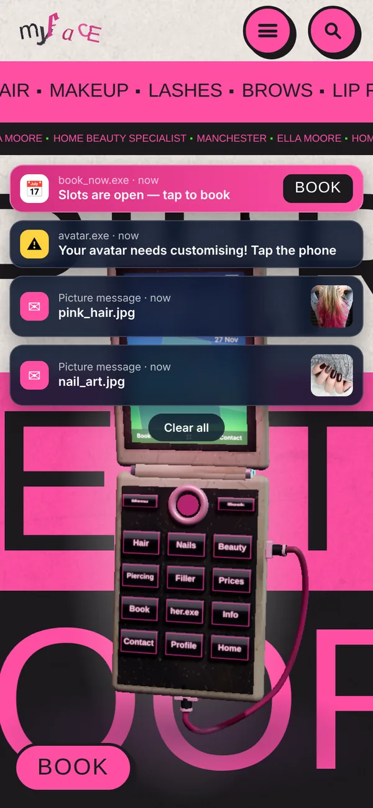
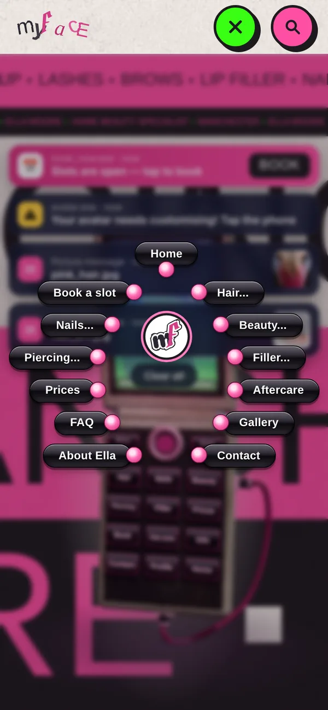
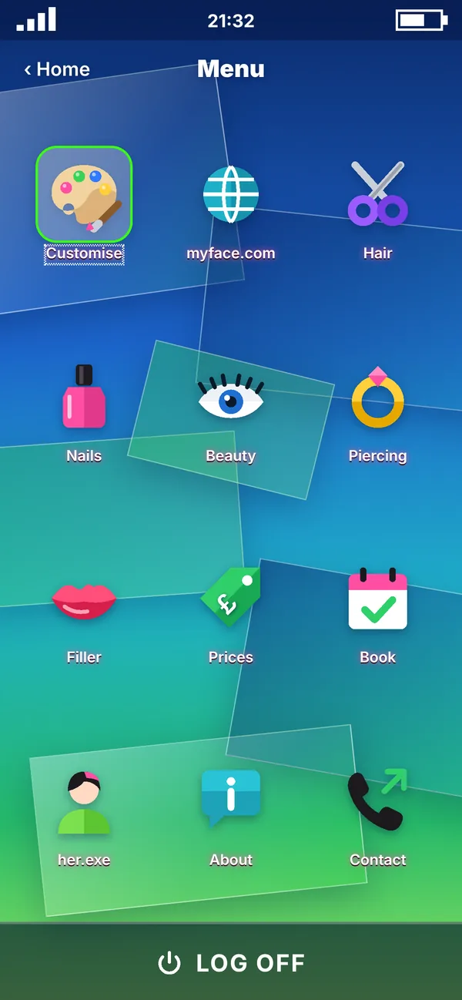
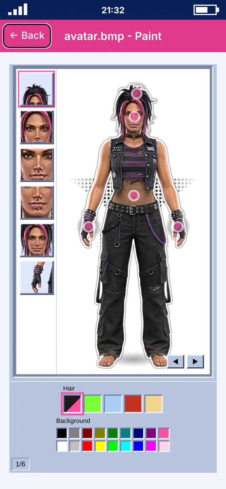

Every hover does something
Bubbles glow pink with a neon ring. Hotspots on the avatar pulse, then light up and show a label. Desktop icons highlight like a real desktop, and the Start menu highlights in navy like Windows 95.
Myface. A Client Website For A Manchester Beauty Studio. Logo, Brand And Design Direction By Harrison Greener. Brutalism × Cyberpunk. 3D Computer Built In Three.Js. A Whole Second Interface For Phones. 39 Pages Built For Google. Made For Alternative Women.
Client project · Logo · Brand · Interactive website · 3D

A website for Ella Moore's home beauty studio in Manchester, built as a vintage computer you switch on. Prove you're not a robot, boot up the desktop and customise your avatar. I designed the logo, the brand and the whole design direction, then built it.

Ella didn't want another salon template. She wanted her website to feel like a video game.
MyFace is Ella's appointment-only beauty studio, run from home. She does nails, hair, lashes, brows, piercing and lip filler, and she did all her own piercings herself. Her clients are alternative women: people who'd never book from a pastel salon page with a stock photo of a candle.
The name is a spin on MySpace, so the site had to feel like that era of the internet, then push it somewhere new. Rather than make a page about a game, I made the website be the game, with every treatment something you add to your avatar.
Brutalism and cyberpunk, made girly.
The logo is a captcha: every letter in a different font, warped, tilted and crossed with scribbled lines. It's readable to a person and nonsense to a machine, which is the point. It's the first thing you see, because every fresh visit asks you to prove you're not a robot.
The rest of the direction comes from two places. From brutalism: giant type bands, hard black borders, raw boxes and nothing softened. From cyberpunk: hot pink against black, neon green, glossy chrome bubbles and an old computer that feels a bit haunted. Together they make something alternative women would actually want to click.
Every fresh visit starts with a captcha. The warped letters are the logo, and ticking the box lets you in.
A pink 3D computer, with photo windows popping up around it like an old desktop full of open files.
Click the computer and the camera dives into the screen, boots up and drops you on a working desktop.
Restyle the avatar in Paint, or open treatments, prices and booking in their own windows.


Instead of a price list, you get Ella's avatar open in Paint. Every part of her is a hotspot, and each one opens the treatments for it.
The Paint palette is real. Pick black and pink, neon green, ice blue, red or blonde and her hair changes colour. The background swatches recolour the star behind her.
The arrows turn her round in six angles, and the thumbnails down the side zoom straight to her hair, eyes, face, lips or nails.

On a phone, it isn't a squashed computer. It's a phone.
A desktop computer doesn't fit a phone screen, so phones get their own design rather than a shrunk-down version. The 3D computer becomes a flip phone, the pop-ups arrive as notifications and texts, and "switching it on" opens a phone home screen with its own apps.




The flip phone's keys are real links: Hair, Nails, Beauty, Piercing, Filler, Prices, Book, Info, Contact, Profile and Home, laid out like a phone keypad.
Phones get lighter textures, and the 3D only loads after the captcha, so the first screen appears straight away on mobile data.
Live preview
The real site, running live in both of its versions. Tick the box, then click the computer, or tap the phone.
The fun only works if people find it.
3D sites often vanish from search because there's nothing for Google to read. So everything you can open on the computer is also a real page underneath, with proper links, headings and text. Each treatment has its own page aimed at what people actually search for, like "Lip Filler in Manchester", and each nearby area has one too.
All the pages come from one Python script. Change a price or add a treatment in one place, run it, and every page, the sitemap and the structured data update together.

The computer is a 3D model in three.js. The desktop, windows, menus and pop-ups are ordinary HTML, so they're quick, accessible and readable by search engines. The 3D only loads once you're through the captcha, and phones get lighter textures, so the first screen appears fast.